일제강점기와 6.25전쟁, 도시의 급격한 현대화, IMF 등 세월의 변화와 풍파 속에서도 수년의 세월을 지켜 온 가게가 있다.
저마다 지켜 온 방식은 다르지만, 자신만의 철학으로 간판을 지켜 온 가게에는 지켜온 사람들의 자부심과 이야기가 가득하다.
‘지역의 오래된 가게’에서는 설립 30년 이상(2021년 기준) 된 가게를 대상으로, 오랜 세월 켜켜이 쌓인 소박한 사람들의 이야기를 담았다.
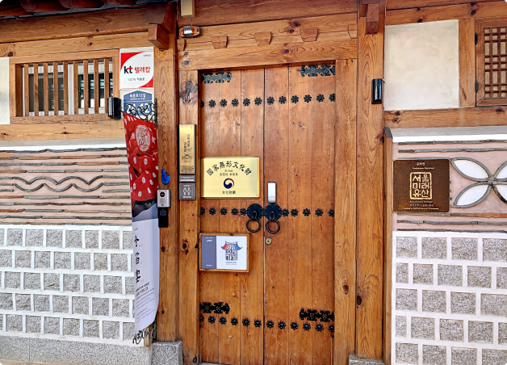
1856년 「금박연」
금박연은 서울특별시 종로구 북촌동에 있는 금박을 하는 가게이다. 금박연은 2006년 5대째 가업을 잇고 있는 김기호가 처음에는 금박이라는 이름으로 가게를 열었다.
금박연의 가업은 1856년까지 거슬러 올라가게 된다. 김기호의 고조부인 김완형이 내수사에 근무하면서 금박을 시작하였고, 증조부인 김원순은 국장도감의궤에 기록된 장인이었다. 이러한 가업은 조부인 김경용 그리고 아버지 김덕환을 거쳐 김기환까지 이어져 왔다.
그리고 2012년 현재의 위로 이전을 하면서 ‘금박의 잔치’라는 의미의 금박연이라는 상호를 걸었다. 금박연은 김기호의 아버지인 김덕환이 작품 전시회를 열 때 사용했던 이름이다. 상호를 내세운 가게가 그리 오래되지는 않았지만 금박연이 의미를 가지는 것은 5대에 걸쳐 가업으로 전통시대 철종 때부터 금박을 이어오고 있기 때문이다.
의복에 금박을 입히는 기술은 세계 어느 나라에서도 찾아보기 어려운 고급 기술이다. 그럼에도 불구하고 전통 금박을 계승하고 보존하는 것은 현실적으로 쉽지가 않다. 지금까지 금박연은 가문의 전통을 잇는다는 자부심과 금박의 아름다움을 계승한다는 자긍심으로 수작업 금박을 고집하고 있다.
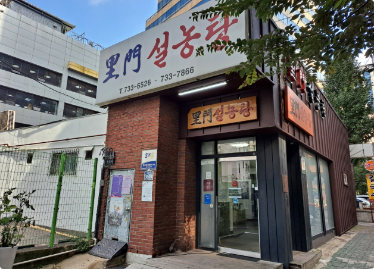
1902년 「서울 이문설농탕」
이문설농탕은 서울특별시 종로구 견지동에 있는 설농탕 식당이다. 이문설농탕은 처음 홍종환이 이문식당으로 문을 열었고, 그 뒤 양씨가 인수했다고 한다. 양씨의 이름은 불분명하다. 창업 연도는 여러 설이 있는데 당시의 상황을 기억하는 노인들에 의하면 1902년~1907년까지로 설명된다.
1960년 유원석이 이문설농탕을 인수하고 1981년 아들인 전성근이 이어받아 가게를 운영하고 있다. 그래서 전성근은 1904년을 개업 연도로 삼고 있다.
이문설농탕의 전신였던 이문식당은 일제강점기 설렁탕의 대명사로 배달음식의 선두이기도 하였다. 이문식당의 설농탕은 배달부들의 횡포와 여름철 냉면을 팔다가 종로경찰서에 단속되는 되는 등 배달음식의 대표였다. 당시의 기록에 의하면 ‘설렁탕 그릇을 목판에 담아 어깨에 메고 자전거를 타고 다니며’라고 배달하는 모습을 표현하고 있다.
19세기 말부터 설렁탕은 외식문화의 중심에 있었다. 설렁탕은 6·25전쟁 이후 화학조미료·분유를 섞은 짝퉁 설렁탕에 밀리고, 젊은이들이 서양 음식에 익숙해진 상황에서 위기가 계속되고 있다. 그러나 음식의 진정성을 유지하려는 노력 때문에 이문설농탕은 단골손님이 후원자가 된다.
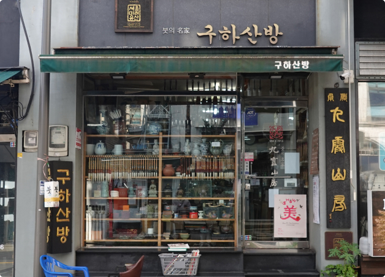
1913년 「구하산방」
구하산방은 1913년경 문을 연 필방이다. 구하산방의 상호는 중국 신화에 나오는 산으로 아홉명의 신선이 교유했다는 산에서 빌려온 이름이다. 처음 구하산방을 연 가키다 노리오는 문화에 대한 지식을 갖고 있었던 것으로 보이는데 지필묵 가게였음에도 조선 고미술품 가게로 더 알려져 있었다.
구하산방은 일제강점기 우리의 문화재가 일본으로 유출되는 통로가 되기도 하였다. 한편으로 구하산방에 1935년 홍기대가 점원으로 일을 하면서 우리의 문화재 가치를 이해하고 보호에 나선 공로도 있다. 홍기대는 구하산방에서 가키다와 마에다 사이로치로에게서 도자기 감정 및 기술을 익혀 고미술상으로 유명해졌다.
구하산방에는 광복 전에는 일본인들과 조선인 고미술상들이 드나들었고, 광복 후에는 미군정 관리와 외국 외교관들이 드나들며 우리 문화재를 수집하였다. 물론 정치인이나 기업인들도 구하산방은 그냥 지나칠 수 없는 그런 고미술품들을 취급하였다.
구하산방은 단순히 붓만을 판매한 것은 아니다. 때로는 재능은 있지만 재료를 살 여유가 없는 예술가에게는 작품 한 점을 받고 붓을 건네주기도 하였다.
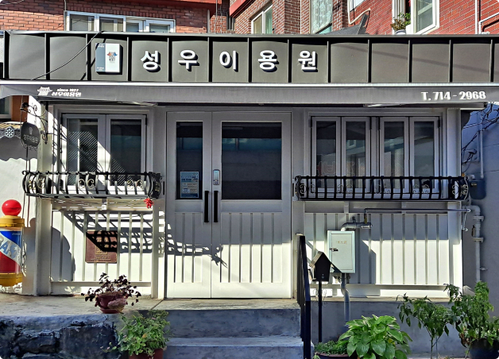
1927년 「성우이용원」
성우이용원은 1927년 현 위치에 서재덕이 개업하였다. 1935년 서재덕의 사위인 이성순이 가게를 이어받았고 이성순의 아들 이남열이 대를 이어 운영하고 있다.
성우이용원을 처음 연 서재덕은 일제강점기 조선사람 중에서 이발면허증을 2번째로 받은 인물이다. 당시 일반인들이 이발소를 다니기 시작하면서 이발소가 증가하기 시작하였다. 그래도 이발소는 명절이나 특별한 날에만 들리는 그런 곳이었고, 멋쟁이 신사들이 단장을 위해 드나들었던 곳이었다.
2대 운영자인 이성순은 창업자인 서재덕의 사위로 일본에서 이발 기술을 배웠다. 이남열은 이성순의 아들로 1970년 이용사 면허증을 취득했는데 중학생 때부터 아버지 이성순에게 바닥 청소를 하면서 이발 기술을 익혔다.
성우이용원은 개업 이래 한 장소에서 가게를 옮기지 않고 옛 모습을 유지하며 운영을 해왔다. 2019년도에 리모델링을 하면서 옛 모습은 볼 수 없지만, ”이발은 가위와 빗으로 머리를 깎는 기술로, 사람마다 어울리는 머리가 다르다” 며 손님들의 머리를 살피는 이남열 이발사의 자부심은 그대로 남아있다.
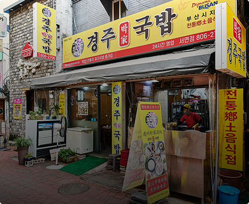
경주 박씨가 운영하는부산 경주박가국밥
경주 박가 국밥은 경주 박가(慶州 朴家)가 운영하는 국밥집이다. 현재 대표인 박주호씨가 국밥집을 운영하던 어머니에게서 국밥 일을 배운 후, 1993년 금정구 서동에 경주 박가 국밥 분점을 열었다. 1997년 박주호의 경주박가국밥 분점은 지금의 연제구 연산동으로 가게를 옮겼고, 부산 및 울산에 지점을 운영하고 있다.
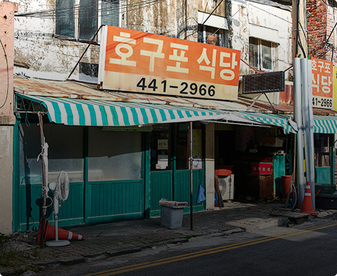
뜨끈한 국밥이 일품인천 호구포 식당
동해 심의관 고택은 뒤쪽으로 나지막한 야산이 자리하고 있고, 앞쪽으로 하천이 흐르고 있다. 동해 심의관 고택은 비록 규모는 작지만, 배산임수(背山臨水)에 충실한 지형에 자리 잡고 있다. 동해 심의관 고택의 둘레는 대나무 숲으로 조경이 되어 있으며, 진흙과 돌로 만든 담장은 소나무와 조화를 이루고 있다.
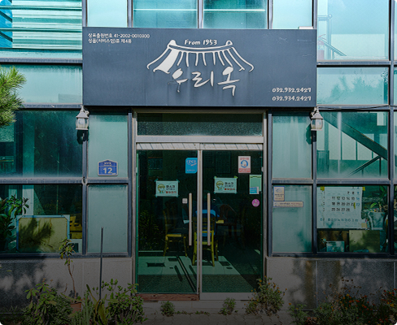
푸근한 백반집인천 우리옥
우리옥은 인천광역시 강화군 강화읍에 있는 백반 전문점이다. 1953년 개성출신의 방숙자씨가 해장국집으로 시작한 가게로 한국전행 후, 변변하게 밥 먹을 곳 없던 강화도에서 집밥처럼 한 끼 식사를 할 수 있는 식당이었다. 지금은 창업자의 조카가 이어서 운영하고 있다.
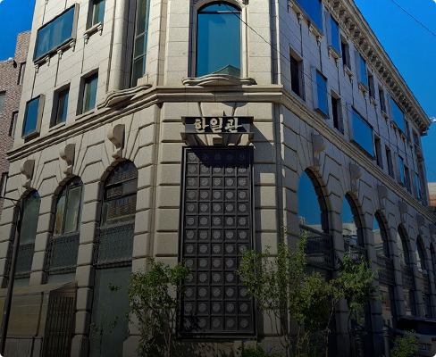
서울 음식은 여기에서서울 한일관
서울특별시 강남구 압구정동에 있는 한일관은 3대째 가업을 이어가고 있는 한식당이다. 1939년 종로 피맛골에서 ‘화선옥’으로 시작했고, 1945년 한일관으로 상호를 변경하여 3대째 운영하고 있다. 한일관에서는 간이 심심하고 깨끗한 ‘서울식’ 음식을 맛 볼 수 있다.
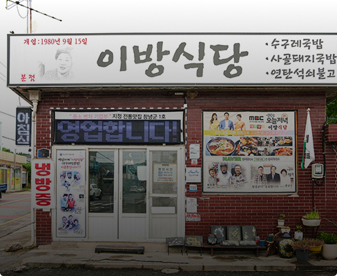
수구레국밥 전문창녕 이방식당
경상남도 거창의 이방식당은 1977년 이방시장에서 난전(亂廛)으로 시작하였다. 이방식당은 시장에서 좌판 장사할 때부터 팔았던 소의 가죽과 살코기 사이의 특수부위인 수구레가 들어간 수구레국밥과 수구레국수를 전문으로 한다. 2018년부터 창업자의 며느라가 대물림하여 운영하고 있다.
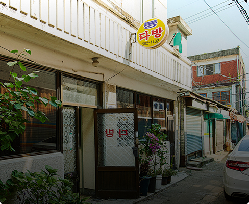
그 시절 만남의 장소인천 봉다방
봉다방은 1974년 개업한 곳으로 인천에서 현존하는 가장 오래된 다방이다. 봉다방의 봉은 만날 봉(逢)자로 만남이라는 데 의미를 두어 작명하였다. 처음 시작했던 산곡시장에서 지금도 여전히 사람들을 맞이하고 있다.
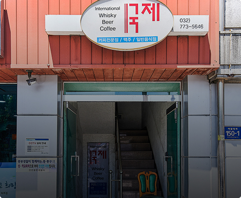
지식인들의 쉼터인천 국제다방
1979년 인천 신포동에 문을 연 국제다방은 한때 문화예술인, 기자, 교수 등 다양한 사람들이 드나들며 북적이던 곳이었다. 70~80년대 신포동에는 40여개의 다방이 있었지만, 지금은 국제다방만이 유일하게 남아있다.
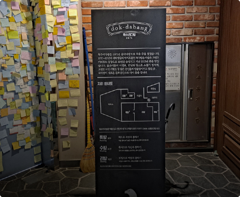
새롭게 돌아온서울 독수리다방
서울 연세대 근처 독수리다방은 1971년 개업해서 2005년 폐업했다가, 창업자의 손자인 현재 운영자가 2013년 같은 자리에 다시 오픈하였다. 이전과는 완전히 다른 모습이기는 하지만, 옛 추억을 간직하며 간판을 이어가고 있다.
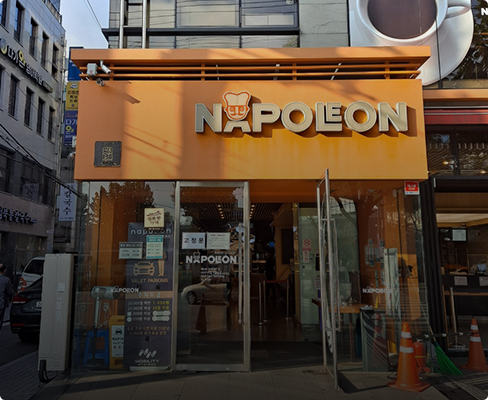
제과제빵사관학교서울 나폴레옹과자점
나폴레옹 과자점은 1968년 서울 성북구 삼선교에서 시작한 빵집으로 지금은 본점 이외에 여러 곳에 분점을 운영하고 있다. 제과제빵사관학교라는 별칭이 있을 정도로 많은 제빵 기술자들을 키워낸 곳으로 알려져있다.
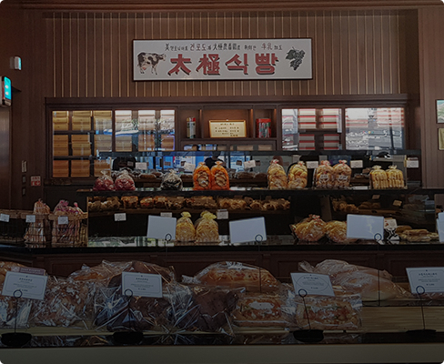
수구레국밥 전문서울 태극당
1946년 개업한 태극당은 본래 명동에 있었지만 1973년 지금의 위치인 장충동으로 이전하였다. 3대에 걸쳐 운영되는 태극당은 옛 것과 새 것의 조화를 늘 고민하며, ‘서울에서 가장 오래된 빵집’의 명성을 이어가고 있다.
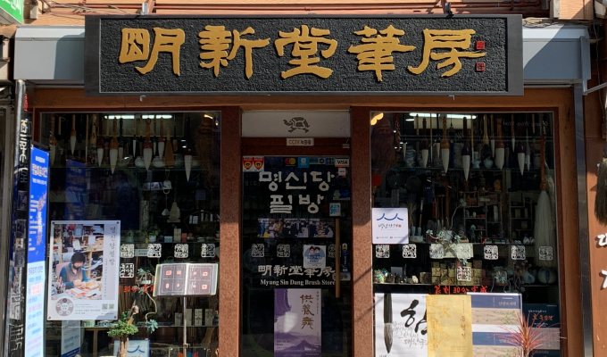
서울 명신당필방
명신당필방은 1932년 충청남도 보령에서 벼루공장으로 시작했다. 1987년 지금의 인사동 자리에 문방사우(文房四友)를 파는 곳을 열었다. 명신당필방은 4대에 걸쳐 이어진 가게로 3대 주인은 며느리인 김명이고, 4대를 잇고자 하는 이는 김명의 딸인 이수정이다. 김명의 남편 이시규는 서예작가·전각가로 대학교수로 재직 중이다. 이 가게는 외국의 국빈들이 즐겨 찾는 곳으로도 그 이름이 알려져 있다.
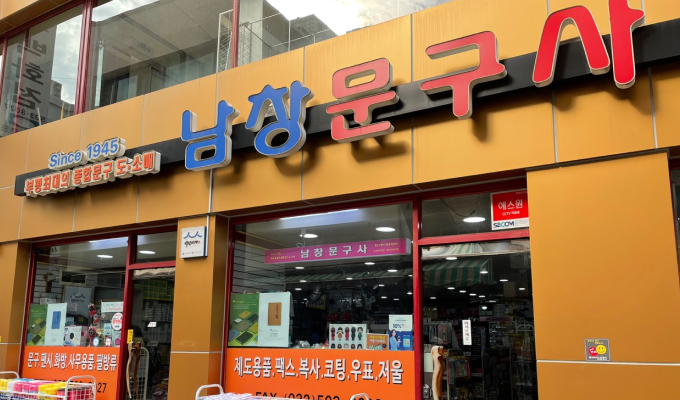
인천 남창문구사
남창문구사는 인천광역시 부평구 부평동에 있는 인천에서 현존하는 가장 오래된 문구점이다. 1945년부터 시작한 문구점은 처음에는 창업자인 임창용씨가 화장품을 팔면서 문구를 같이 취급하는 곳이었다. 1974년, 현재의 자리로 옮기면서 문구를 전문으로 취급했고 문구백화점으로 자리매김하였다. 2021년 현재 3대에 걸쳐 운영되고 있다.
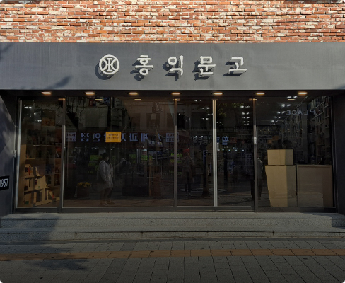
신촌역 랜드마크서울 홍익문고
홍익문고는 1957뇬 노점책방으로 시작하였다. 1978년 현재 위치인 서울 지하철 신촌역 3번 출구로 옮기며, 신촌의 랜드마크로 자리잡았다. 2012년 지역 재개발로 없어질 위기에 처했지만, 지역주민들이 힘을 모아 홍익문고를 지켰다.
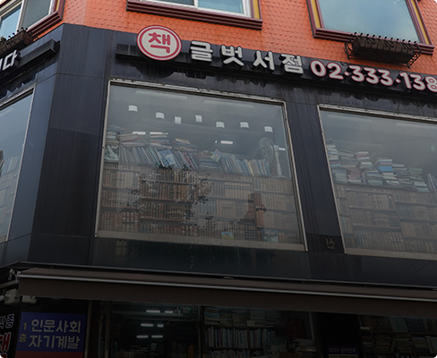
좋은 책을 저렴하게서울 글벗서점
‘세상의 모든 책은 사람이다＇라는 슬로건을 내 건 헌책방 ‘글벗서점’은 책 뿐만 아니라, 오래된 음반과 DVD도 판매한다. 1979년 ‘온고당’이라는 이름으로 서울 마포구 서교동에서 시작하였고, 2017년 동교동 자리로 옮겨왔다.
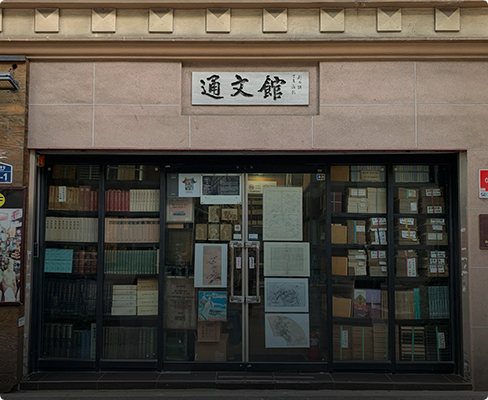
우리나라 최고령 고서점서울 통문관
통문관 서울특별시 종로구 인사동에 1934년 이겸노가 문을 연 우리나라에서 제일 오래된 고서점이다. 통문관은 서점 그 자체로 고서적 전문서점이면서 보존 가치가 있는 우리나라의 고서 연구에 공헌한 문화유산이기도 하다.
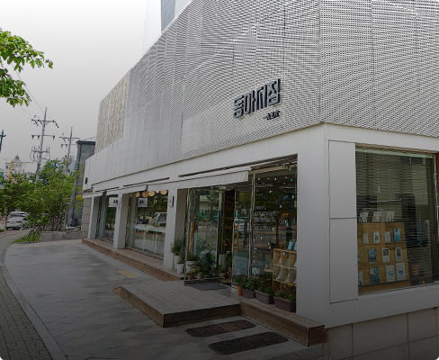
젊은 서점으로 거듭난속초 동아서점
동아서점은 창업주 고(故) 김종록 씨가 1956년에 동아문구사라는 상호로 개업하였다. 1960대 문구를 정리하고 ‘동아서점’으로 상호를 바꾸었다. 창업자의 손자가 서점 경엉에 참여하며 2015년 서점을 신도심으로 이사하였고, 젊은 서점으로 거듭나고 있다.
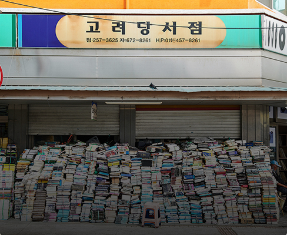
경북에서 가장 오래된대전 고려당서점
고서를 파는 노점상으로 시작한 헌책방 고려당서점은 1969년 정식 상호를 붙이고 인천 동구 원동에 서점을 개업하였다. 운영자가 국문학을 전공하고 고서를 보는 뛰어난 안목이 있어, 고려당서점은 오랫동안 연구자들과 고서 수집가들이 즐겨 찾는 장소가 되었다.
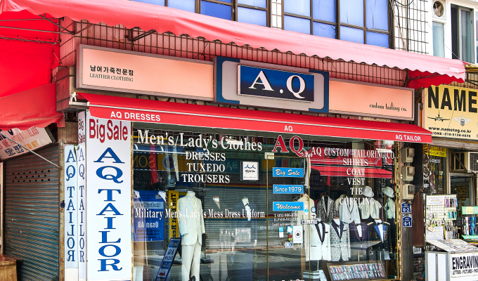
평택 에이큐양복점
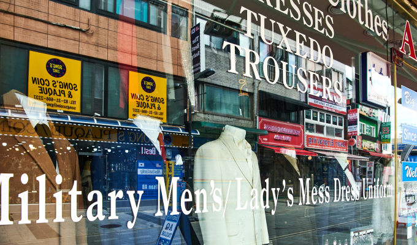
평택 에이큐양복점
서울 지큐양복점
지큐양복점은 서울특별시 성동구 왕십리에 있는 고급 수제 양복점이다. 창업자인 김진업씨는 1964년 고영기 양복점에서 처음 수제 양복 만드는 일을 배우기 시작하였다. 그리고 1977년 독립하여 ’20세기 양복점’이라는 이름으로 가게를 내었고, 1984년 ‘지큐양복점’으로 상호를 바꾸었다. 왕십리에서만 가게를 계속 운영하고 있다. 2020년 백년가게로 선정되었는데 이는 명장의 기술력을 인정받은 고급 수제 양복업계에서는 최초의 선정이다.
평택 에이큐양복점
에이큐양복점은 1980년 당시 경기도 평택군 송탄읍 국제중앙시장 인근에 지금도 대표로 있는 이인재 씨가 세운 40년의 역사를 지닌 가게이다. 이인재 씨는 1970년 양복 재단사의 길에 입문하여 50년의 경력을 쌓았으며, 10대 후반부터 두 군데의 양복점을 운영할 정도의 업력(業力)을 지녔다. 이인재 씨는 장래 90세가 되어도 현역으로서 양복점을 지키는 희망을 이루기 위해 지금도 자기 관리에 힘쓰고 있다.
원주 평양복점
강원도 원주시 원주중앙시장에 있는 명양복점은 1982년 명효성 씨가 창업한 이래 40여 년에 가까운 세월을 한 자리에서 지금까지 영업하고 있는 오래된 가게이다. 창업자인 명효성 씨는 1953년 16세의 나이로 양복 기술을 배우기 시작한 이래 70년에 가까운 세월을 양복 만드는 ‘테일러’의 외길을 걷고 있다. 1992년과 2019년 두 차례 원주중앙시장의 화재로 위기를 겪었으나, 재기하여 사람들을 맞이하고 있다.
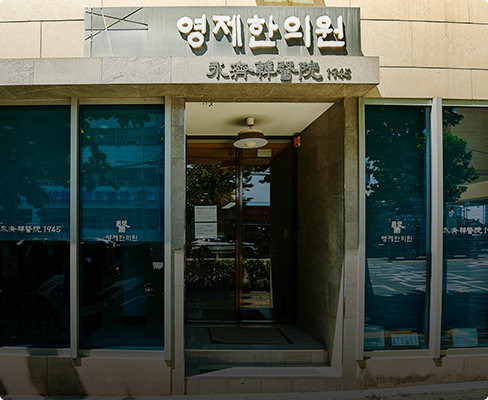
광복 이전부터 시작한인천 영제한의원
인천 미추홀구에 있는 영제한의원은 실제 시작은 영제침료원으로 일제강점기에 시작했지만, 1945년을 정식 개업년도로 하고 있다. 창업자 노두식씨의 아들이 가업을 이어받았고, 3대에 걸쳐 운영되고 있다.
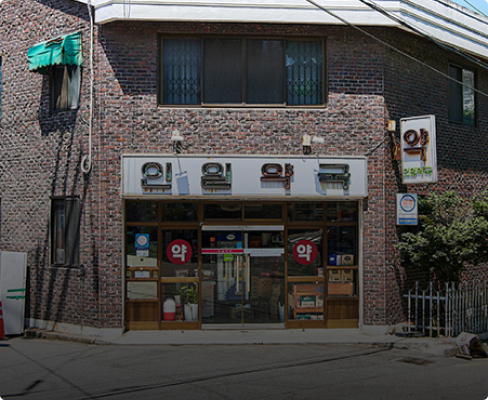
항상 그 자리 그 시간인천 인일약국
1967년 인천 동구에 개업한 인일약국은 지금도 아침 7시반 개점, 21시 이후 폐점을 유지하고 있다. 여자 약사가 드물었던 시절부터 시작을 해, 자리 비우는 일도 거의 없이 약국을 지켜왔다. 할 수 있는 한 계속해서 약국을 운영하고자 한다.
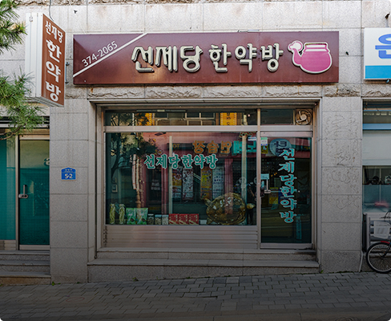
백년 세월의 건강 지킴이영월 선제당 한약방
‘선행과 구제를 베푼다.’는 뜻을 가지고 있는 선제당 한약방은 19세기 말에 개업한 것으로 추정하고 있다. 한약방이 줄어들고 있지만, 3대째 가업을 잇고 있는 선제당 한약방은 예나 지금이나 정성스럽게 한약을 조제하며 자리를 지키고 있다.
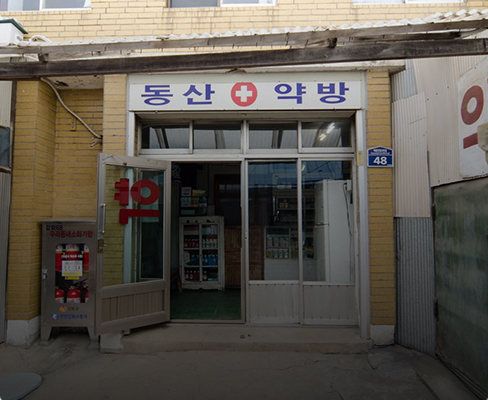
마을 하나뿐인 약방인천 동산약방사진출처:인천광역시
동산약방은 1961년경에 인천 강화 삼산면에서 시작한 약방이다. 동산약방의 상호는 설립자의 고향인 인천 강화 교동면 동산리에서 따왔다. 1988년에 현재 자리인 인천 교동으로 이전했다. 교동도와 육지 사이에 교동대교가 놓이기 전까지 약방은 응급실과도 같은 소중한 가게였다.